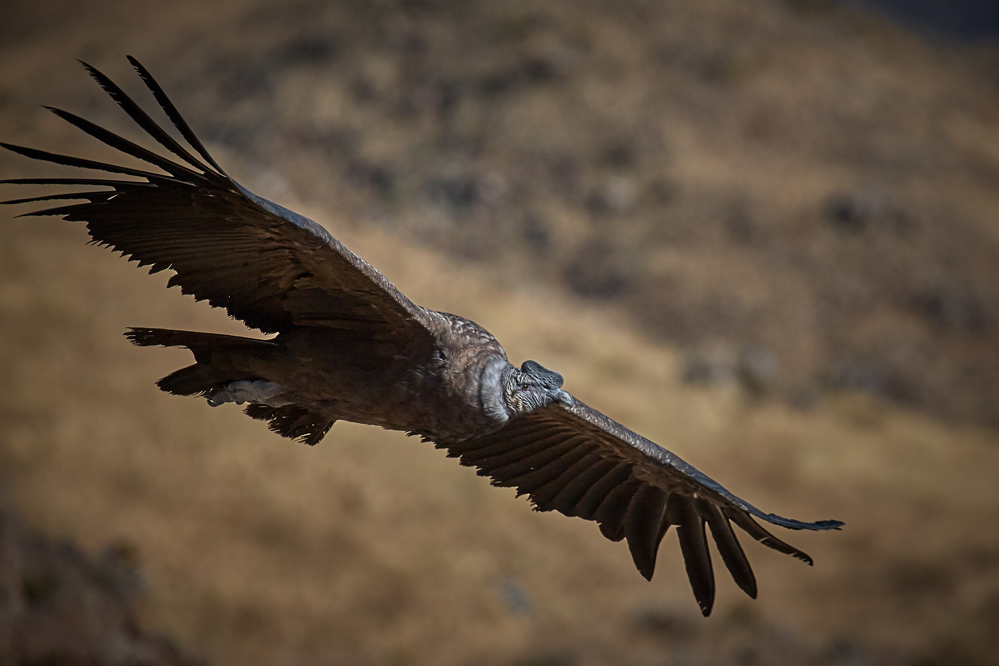
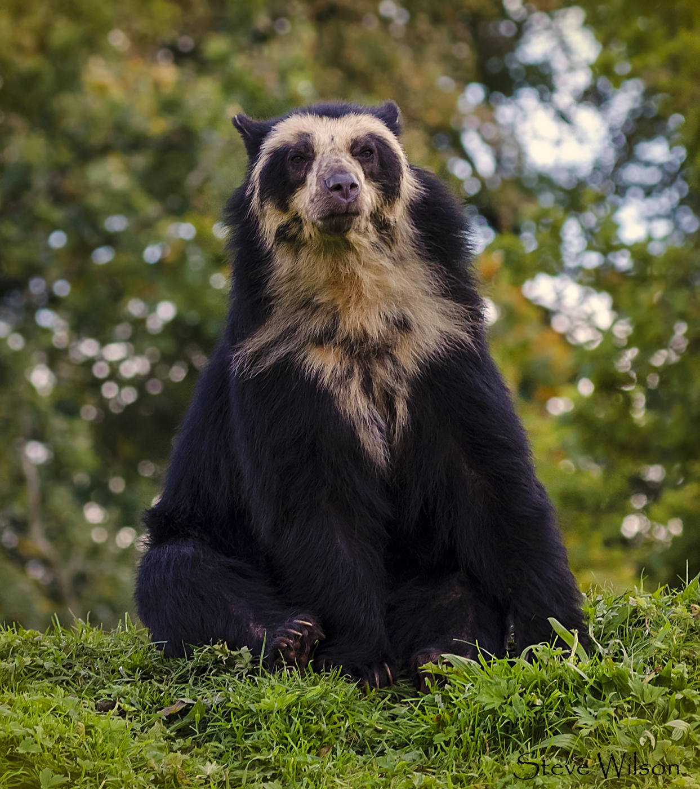
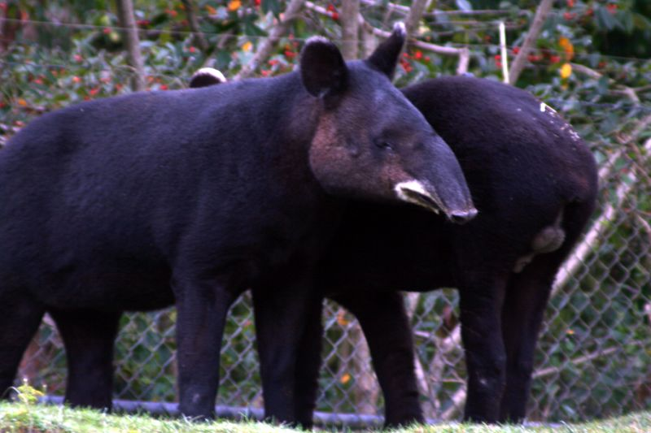
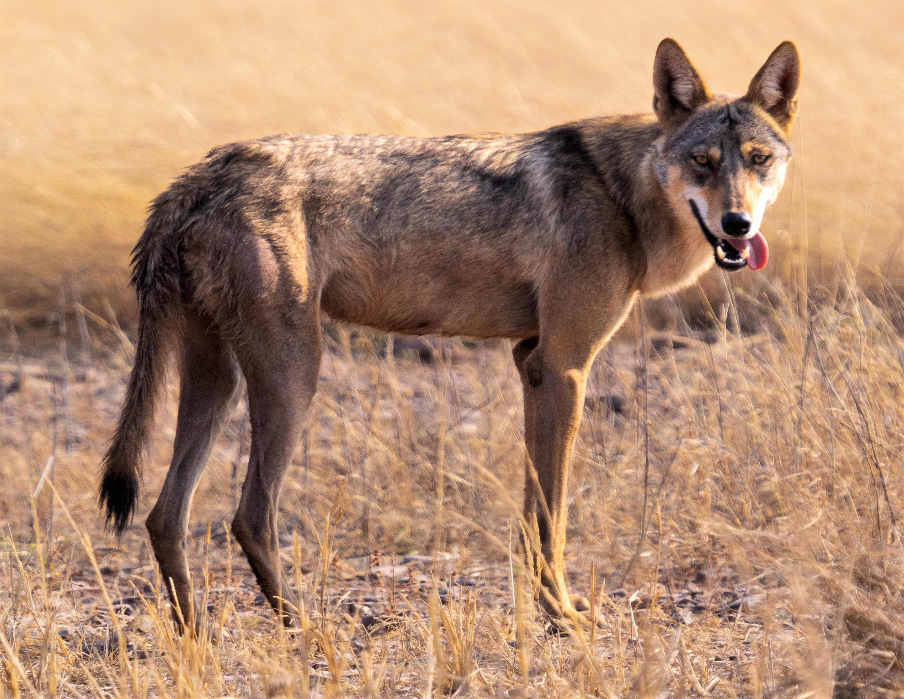

VENEZUELA'S MOUNTAIN WILDLIFE
ANDEAN CONDOR

The Andean Condor is one of the largest flying birds in the world and a symbol of power across South America. In Venezuela, it soars over the Andes páramos, riding thermal currents with its massive wingspan that can reach up to 3.3 meters. As a scavenger, it plays a vital role in the mountain ecosystem. Juveniles display a brown plumage that gradually transitions into the iconic black-and-white of the adult, a transformation that takes up to 8 years.
SPECTACLED BEAR

The Spectacled Bear is the only bear species native to South America and the sole surviving member of the short-faced bear family. Named for the distinctive pale rings around its eyes, each individual bears a unique facial pattern. Found in Venezuela's cloud forests and páramo highlands, this shy creature is an important seed disperser and a keystone species of the Andean ecosystem.
MOUNTAIN TAPIR

The Mountain Tapir is the smallest of all tapir species and one of the most endangered mammals in South America. Found in Venezuela's high Andes at elevations above 2,000 meters, it is uniquely adapted to cold highland life with a thick woolly coat and a distinctive white fringe around its lips. Calves are born with striking white and yellow spots that provide camouflage in the dappled forest light.
PÁRAMO WOLF

The Páramo Wolf is one of Venezuela's most elusive mountain predators, prowling the high grasslands and rocky escarpments of the Andes. Adapted to thin mountain air and freezing temperatures, this canid hunts small mammals and birds across the páramo. It comes in two coat variants — a stealthy grey that blends with rocky terrain and a warm tawny suited to golden grasslands. A sighting of the Páramo Wolf is considered a truly rare and unforgettable wildlife encounter.